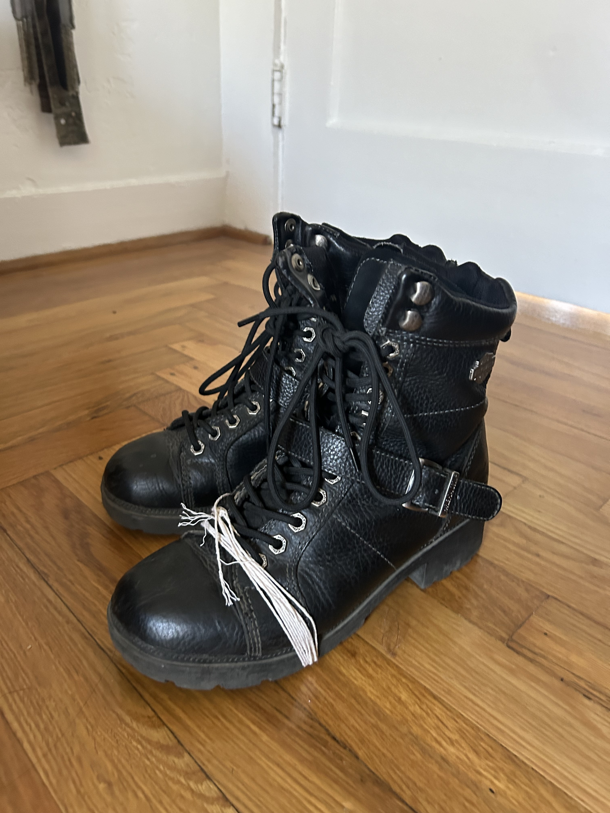

Lab 5 - Data Types and Variables
Challenge
For this lab, we were working on familiarizing ourselves with JavaScript!
Problems
No problems arose! Everything seemed to work very smoothly.
Reflection
I had fun with this assignment! I don't have a car, and I try to walk everywhere that I can so I had my own take on the make and model, which just applied to a pair of my shoes!

This is my preferred vehicle... they're starting to fall apart :o